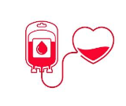
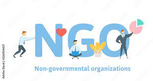

Latest Projects
Ubuntu
This project aims to develop an application for the administration of blood transfusion
establishments, facilitating the management of blood transfer operations and centralizing information.

I am developing this application using Ubuntu.

NGO : care
This project aims to create a non-governmental organization (NGO) to address
issues in the fields of education, law enforcement, government social services, and family.
The goal is to remedy current deficiencies by offering tangible solutions and attracting like-minded individuals
who share the same concerns. The NGO's objective will be to operate autonomously, provide services to residents,
and actively participate in non-profit initiatives, particularly in the fields of humanity and social sciences.
